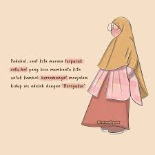

perkenalkan nama saya john seorang frontand development

kebutuhan manusia terhadap ilmu jauh lebih besar dari pada kebutuhannya terhadap makanan dan minuman karna makanan dan minuman hanya di butuhkan sekali atau dua kali saja dalam sehari,dengkan ilmu,dibutuhkan dalam embusan nafas